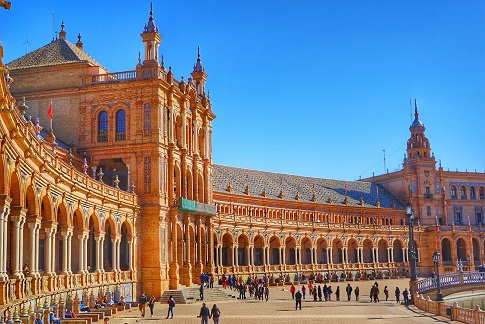

马德里（西班牙语：Madrid）是西班牙首都及最大都市，也是马德里自治区首府，其位置处于西班牙国土中部，曼萨纳雷斯河贯穿市区。市内人口约340万，都会区人口则约627.1万（2010年），均占西班牙首位。其建城于9世纪，是在摩尔人边贸站“马格立特”旧址上发展起来的城市；1561年，西班牙国王腓力二世将首都从托莱多迁入于此，由于其特殊的地位而得到迅速的发展，成为往后西班牙殖民帝国的运筹中心，现今则与巴塞罗那并列为西班牙的两大对外文化窗口。
马德里也是
南欧地区的旅游、文化中心，历史文化遗迹丰富，现代旅游设施齐全，
服务业发达。
